Аудит ракурсов всех 11 зданий людей
6 критических пакетов, 2 существенных правки, 3 локальных расхождения. Старые листы исключены из автоматических входов. Подготовлены нейтральные основные виды и 77 структурных проекций из одной геометрии на здание. Каркасы не выданы за готовые детальные модели.
Главная ошибка — независимые генерации меняли конструкцию, а подпись TOP/REAR не гарантировала нужную камеру. Исправление — общий объём, фиксированные камеры и явные ограничения. Где объём ещё упрощён, это отмечено открыто.
ПВО F
Критическое расхождение
- REAR превращает три контейнера и задний корпус барабана в плохо разделяемые новые объёмы; передние крышки/задние торцы не читаются как те же три кассеты.
- TOP разворачивает верхний узел относительно основания и меняет фазу/видимость контейнеров.
- Соотношение длины кассет, ротора, опор и основания плавает между основным 3/4 и листом.
Открыть пакет сверки · Новый структурный REAR · Одна геометрия
Основной 3/4 против старого листа
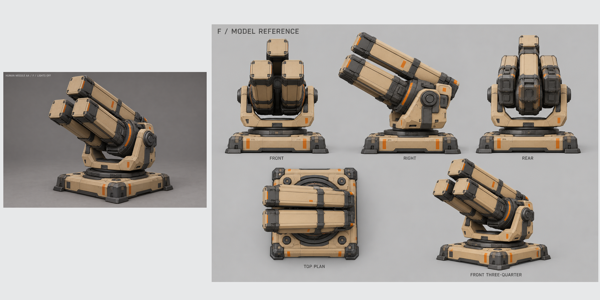
Основной нейтральный вид

Согласованные структурные проекции
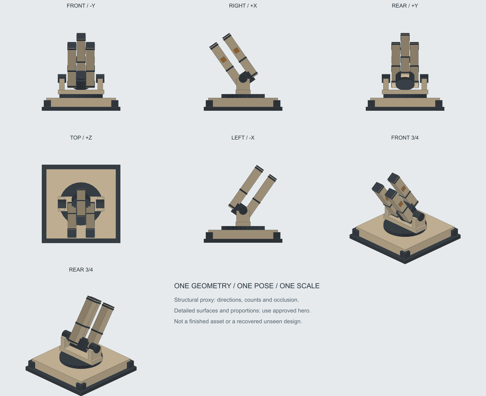
Структурный REAR теперь однозначен, но детальный задний привод/панели в утверждённом 3/4 скрыты и не могут быть объявлены восстановленными.
Штаб C
Существенная правка
- FRONT меняет соотношение центрального портала и боковых плеч относительно основного 3/4.
- TOP и боковой вид по-разному трактуют длину центральной надстройки, оконного пояса и положение приборов.
- Основной вид и старый лист содержат включённые лампы.
Открыть пакет сверки · Новый структурный REAR · Одна геометрия
Основной 3/4 против старого листа
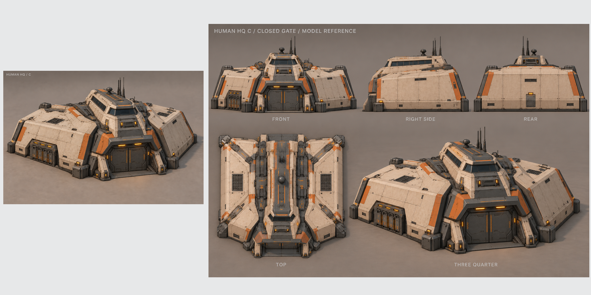
Основной нейтральный вид

Согласованные структурные проекции
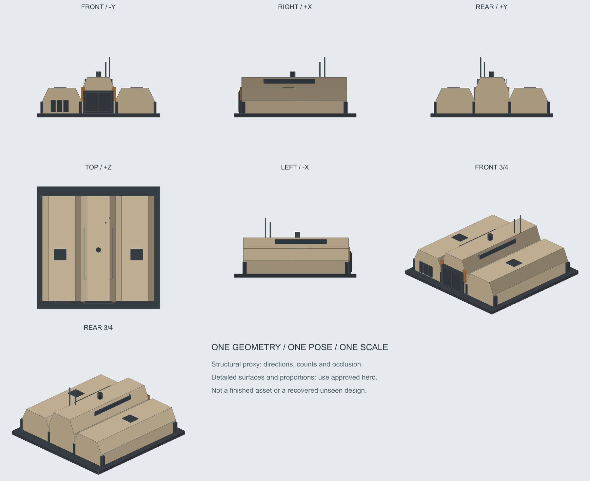
Новый HQ-каркас создан для проверки направлений; он упрощает наклонные оболочки и не является точной реконструкцией силуэта.
Склад F
Малые расхождения
- Основные объёмы и четыре стойки в целом совпадают; грубой смены конструкции не обнаружено.
- В листе плавают зазоры контейнер/рама, пропорции вентиляции и кровельного блока.
- Остались включённые индикаторы; исходный каркас ошибочно делил большой фронтальный затвор на две створки.
Открыть пакет сверки · Новый структурный REAR · Одна геометрия
Основной 3/4 против старого листа
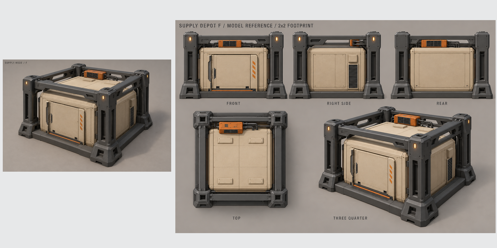
Основной нейтральный вид

Согласованные структурные проекции
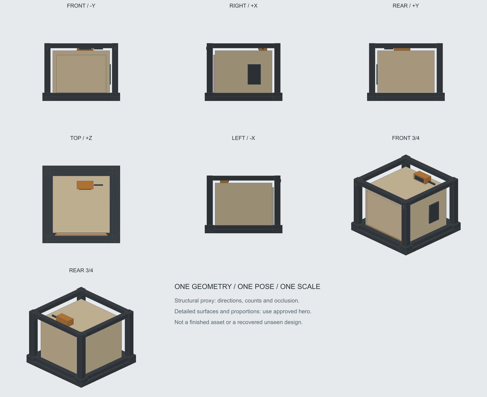
Точную толщину балки/стойки и зазоры рамы сверять по основному виду, не по старому листу.
Казарма F2
Критическое расхождение
- REAR повторяет переднюю композицию с двором/входом вместо закрытого заднего соединителя U-плана.
- Высота/выступ задней центральной надстройки и ширина крыльев меняются между листом и 3/4.
- Механизм должен содержать две каретки; fixed-упоры на боковом виде похожи на дополнительные каретки.
- Старые виды показывали включённые лампы.
Открыть пакет сверки · Новый структурный REAR · Одна геометрия
Основной 3/4 против старого листа
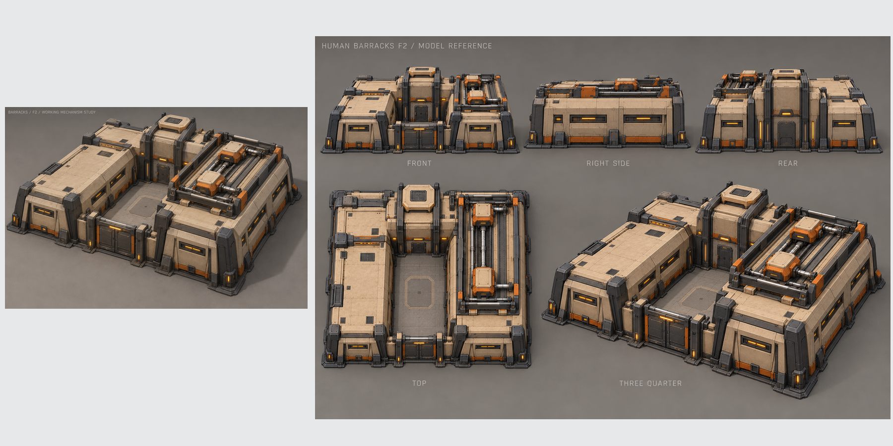
Основной нейтральный вид

Согласованные структурные проекции
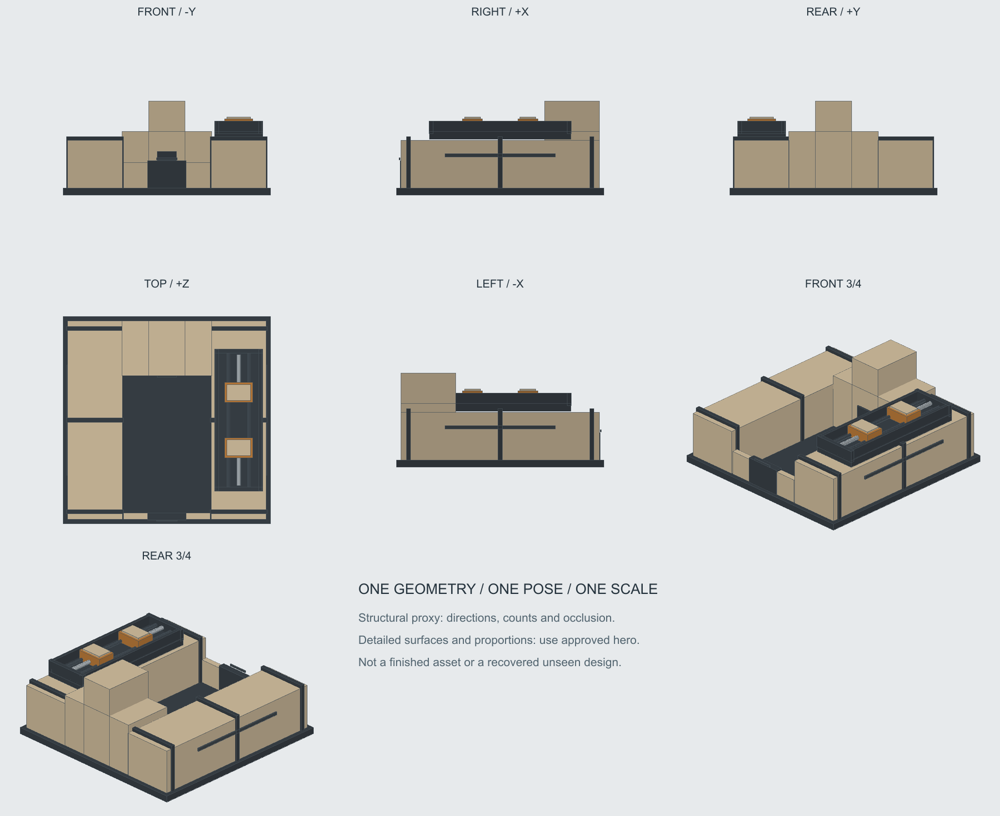
Детальная форма тыльной оболочки не показана основным концептом; не копировать старый REAR как истину.
Мастерская F
Малые расхождения
- Крупный силуэт и центральный колпак в целом согласованы.
- Виды не закрепляют однозначно число/положение световых панелей и оранжевых служебных блоков.
- TOP нельзя считать подтверждением всех фасок/разбивки панелей в 3/4.
Открыть пакет сверки · Новый структурный REAR · Одна геометрия
Основной 3/4 против старого листа
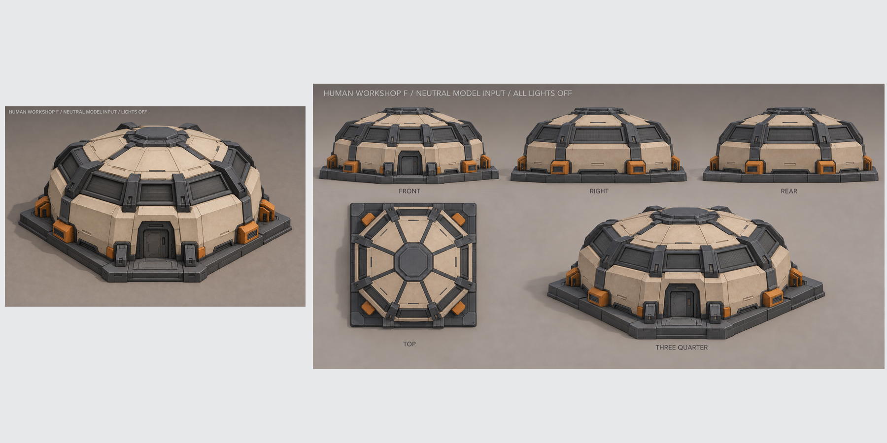
Основной нейтральный вид

Согласованные структурные проекции
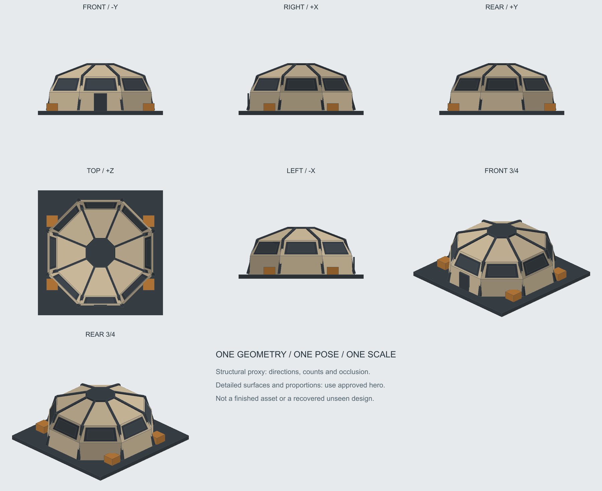
Восемь каналов — текущая раскладка каркаса, а не доказанное число всех декоративных панелей на основном изображении.
Оперативный центр G
Малые расхождения
- Три ребра и три полосы сохраняются; смены основной конструкции не обнаружено.
- TOP показывает переднюю дверь/фасад так, как не должен строгий вид сверху.
- Размер/длина задних рёбер и полос относительно ската немного плавают.
Открыть пакет сверки · Новый структурный REAR · Одна геометрия
Основной 3/4 против старого листа
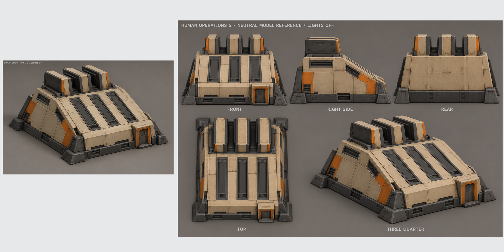
Основной нейтральный вид

Согласованные структурные проекции

Невидимая правая стенка/задние мелкие детали не восстановлены фотографически; уточнять на единой детальной сетке.
Завод D
Критическое расхождение
- RIGHT сохраняет левую башню/каретку во фронтальной раскладке вместо настоящей боковой проекции.
- TOP показывает большой передний фасад и ворота, а не строгий план.
- Соотношения высоты ступеней и задних объёмов меняются между видами.
Открыть пакет сверки · Новый структурный REAR · Одна геометрия
Основной 3/4 против старого листа
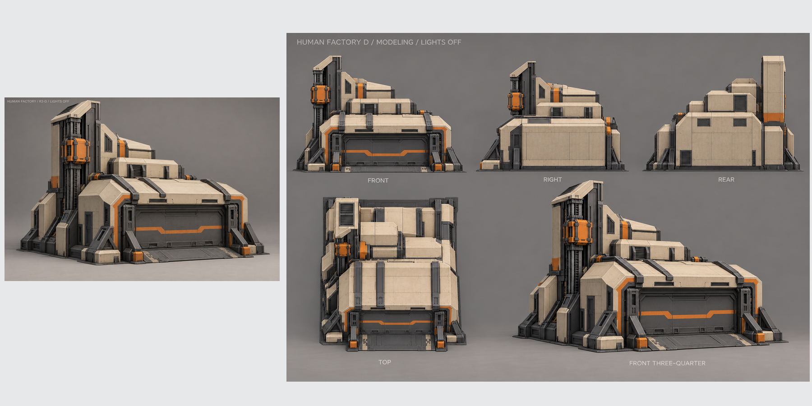
Основной нейтральный вид

Согласованные структурные проекции
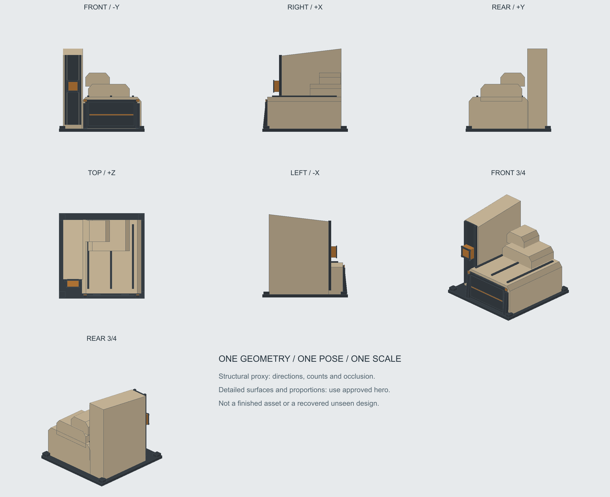
Текущий структурный блок сохраняет компоновку, но заметно упрощает башню и плечи; детальные пропорции не считать автоматически исправленными.
Аэродром D
Критическое расхождение
- REAR фактически является боковым видом: палуба тянется вдоль экрана, задний блок стоит на одном конце.
- FRONT приподнят, TOP включает видимую вертикальную часть ангара.
- Каретка и рисунок палубы меняют положение/масштаб относительно заднего блока.
Открыть пакет сверки · Новый структурный REAR · Одна геометрия
Основной 3/4 против старого листа
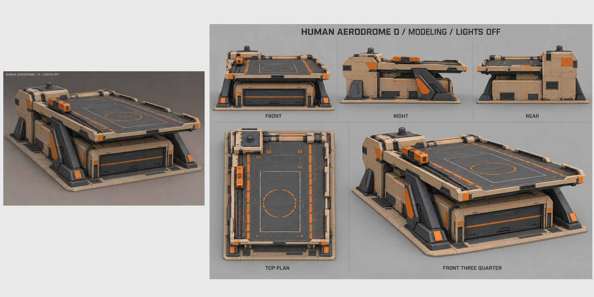
Основной нейтральный вид
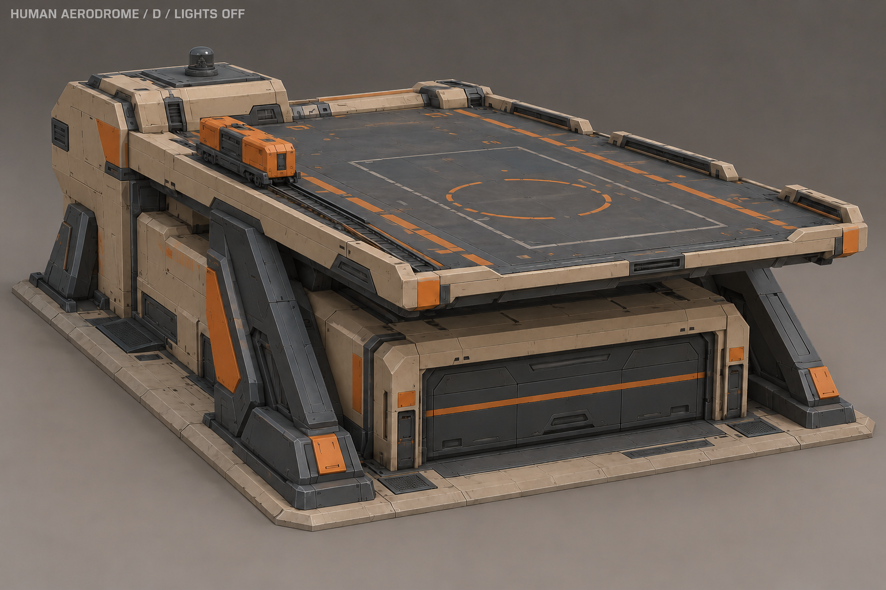
Согласованные структурные проекции
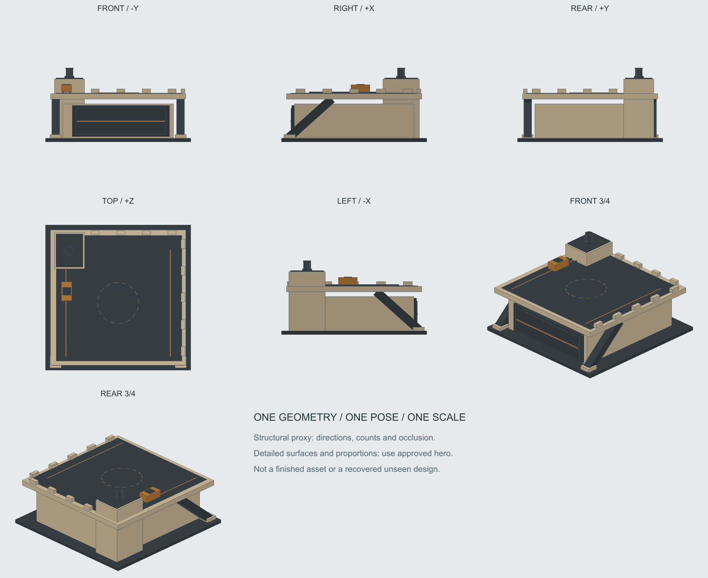
Маячок и каретка везде в покое; тыльные стены пока только структурное предложение, без утверждённой мелкой деталировки.
Командный модуль A
Критическое расхождение
- FRONT/RIGHT/REAR в основном остаются перспективными видами 3/4, а не поворотами камеры на 90°.
- TOP рисует почти круг там, где наклонённая рамка в плане должна проецироваться эллипсом.
- Меняются наклон кольца, видимость шарниров и соотношение стоек/корпуса.
Открыть пакет сверки · Новый структурный REAR · Одна геометрия
Основной 3/4 против старого листа
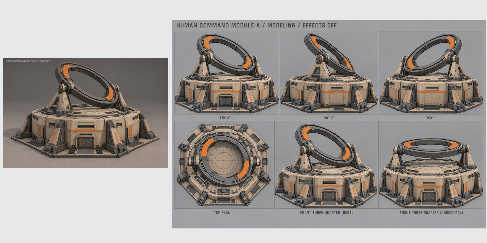
Основной нейтральный вид

Согласованные структурные проекции
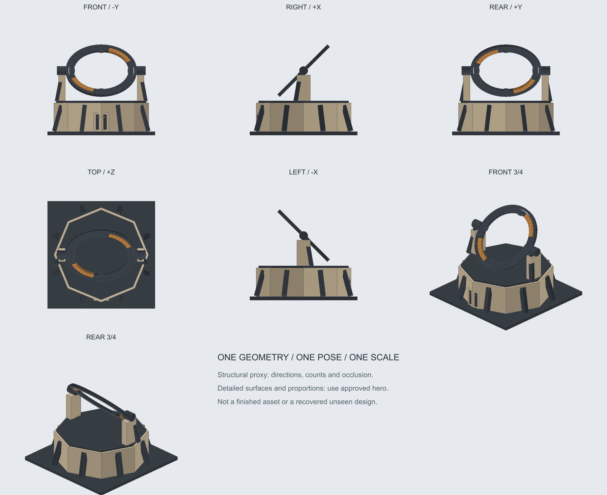
Новый набор основной позы использует существующий каркас 45°; точный видимый наклон/толщина обоймы по концепту требуют детализации.
Наземная турель C
Критическое расхождение
- RIGHT показывает сторону щита без строгой привязки к обозначенной правой стороне.
- TOP поворачивает орудие относительно основания на 90° по сравнению с FRONT.
- Верхний узел и вынос длинного ствола не сохраняют одну позу.
Открыть пакет сверки · Новый структурный REAR · Одна геометрия
Основной 3/4 против старого листа
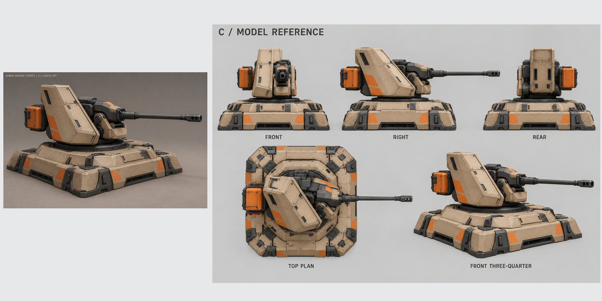
Основной нейтральный вид

Согласованные структурные проекции
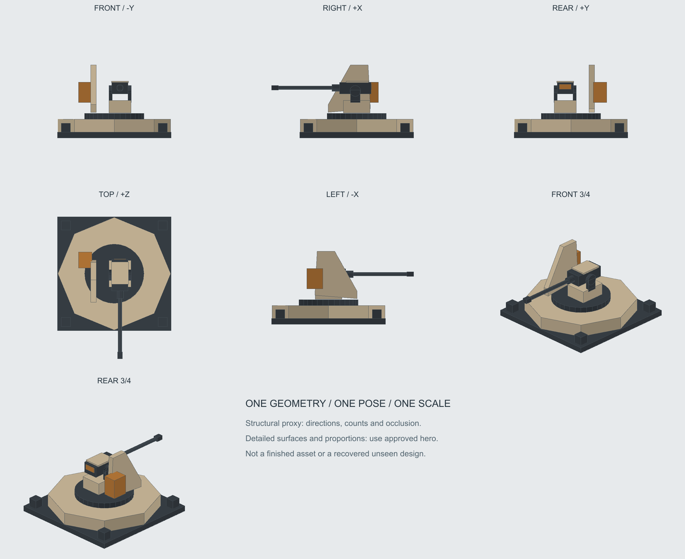
Бронепрофиль, реальные ширины опор и мелкие детали каркаса упрощены; конечные зазоры/вынос ещё не утверждены.